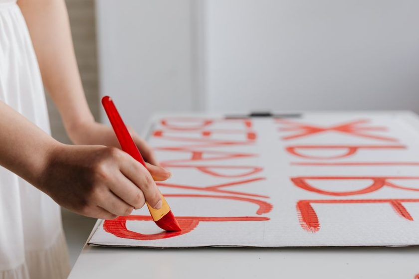
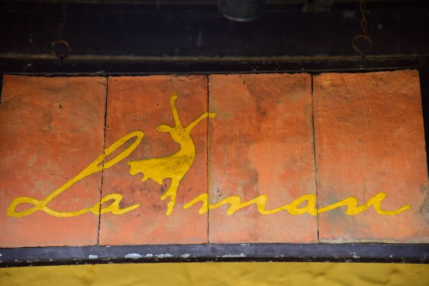
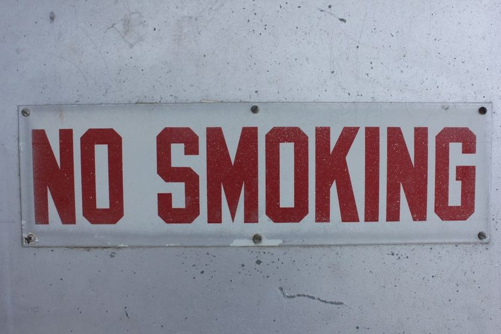
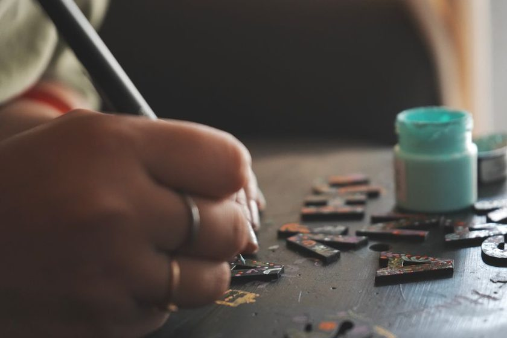
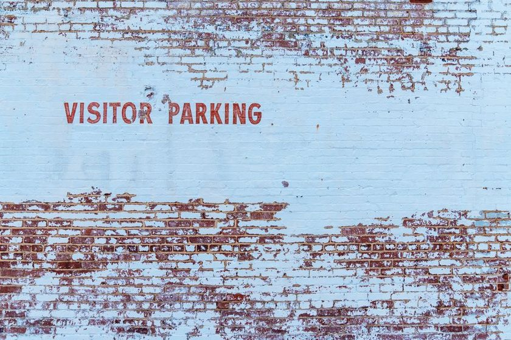
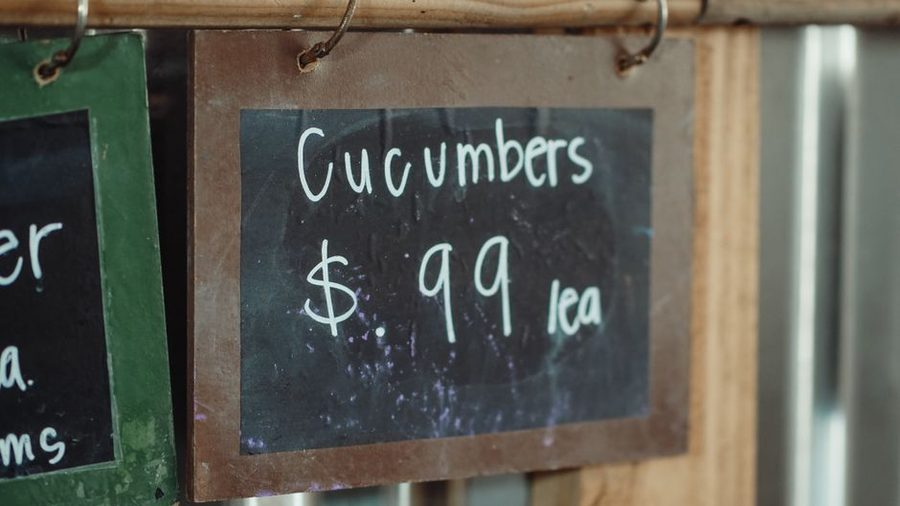

Signs That
Hold Their Line
Enamel on steel, optical spacing over metric, and the case for a brush stroke that ages better than a sheet of vinyl. Notes from people who still lay out a fascia by hand.
Nine Notes on Paint and Proportion
Short, specific pieces on the craft as it is actually practiced — not a style guide, a working notebook kept between jobs.

Reading the Optical Line Why a ruler gets the spacing wrong and a trained eye gets it right. → Enamel Over Steel
The old boards on the corner store have outlasted three generations of plastic signage.
→
Enamel Over Steel
The old boards on the corner store have outlasted three generations of plastic signage.
→

Gold Leaf in Three Passes Sizing, laying, and burnishing — the sequence that keeps leaf from lifting. →
The Quarter-Inch Habit Consistent margins are the quiet reason some fascias look calm and others look crowded. → A Brush Does Not Forget A short account of how sable quills shaped the look of storefront lettering for a century. →
Scaling a Fascia by Eye Working out cap height and line spacing before a single chalk mark goes up. →
The Pounce Pattern Revival A century-old paper transfer method is finding its way back into small shops. → Why Vinyl Fades and Paint Doesn't A pigment comparison between cut vinyl film and bulletin enamel under direct sun. →
Pricing a Hand-Lettered Sign What actually goes into a quote — surface prep, layout time, and the leaf itself. →Layout Sheet measures the way a fascia painter measures
A free planning tool built around optical spacing, cap height, and a baseline grid — for anyone who wants to check a design before the chalk line goes up.
A small journal, kept plainly
Signwright is written by a handful of people who paint, gild, and occasionally argue about spacing. No sponsorships, no product reviews — just notes on the trade. Read the masthead →
New notes, roughly twice a month
You're on the list. We publish roughly twice a month.